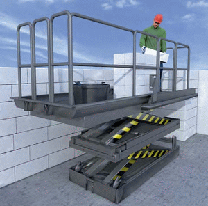

Höhenverstellbare Maurergerüste erlauben einen optimalen Arbeitsablauf. Die Greifhöhe der Steine sollte ca. 40-50 cm über der Standhöhe des Beschäftigten liegen.
Ein sicherer Auf- und Abstieg sowie Absturzsicherungen sind vorzusehen. Gefährdungen durch Quetsch- oder Scherstellen nebeneinander oder übereinander angeordneter Maurerarbeitsbühnen müssen ausgeschlossen werden.